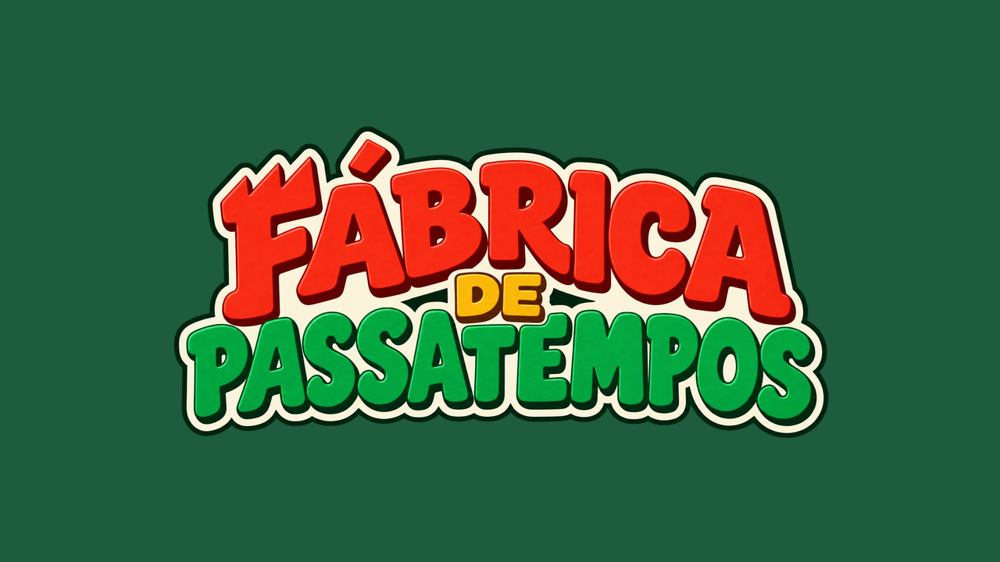

Já no Google Play
Já no Google Play
Na Mesma Pilha
Junte as palavras da mesma categoria e limpe a mesa. Uma paciência para quem gosta de palavras.
Baixar no Google PlayEstúdio de jogos · Brasil
Daqueles que você abre na fila do banco e, quando vê, já passou a vez. Jogos simples de entender, bonitos de olhar e que respeitam o seu tempo: nenhum anúncio interrompe a partida. Se tiver anúncio, você escolhe quando ver.
Jogar o Na Mesma Pilha
Nossos jogos
Já no Google Play
Junte as palavras da mesma categoria e limpe a mesa. Uma paciência para quem gosta de palavras.
Baixar no Google Play Em breve no Google Play
Em breve no Google Play
Lembra do brinquedo de água com argolas? Aperte os jatos, incline o celular e leve cada argola até a haste. Para jogar junto com as crianças, ou sozinho mesmo.
 Em breve no Google Play
Em breve no Google Play
Encaixe as peças, limpe linhas e colunas e ganhe estrelas em fases de vários formatos.
Em desenvolvimento

Um toque muda a órbita do planeta e desvia dos meteoros. Fácil de aprender, para todas as idades.

Valentina, caçadora de recompensas, pilota a nave Andorinha contra os piratas do espaço. Tiro e esquiva em pixel art 16-bit, com clima de anime dos anos 90. O primeiro a cair é o cruzador Jararaca.
Nossa história
A Fábrica de Passatempos ganha nome, e no mesmo dia nasce o primeiro protótipo do Na Mesma Pilha, uma paciência com palavras.
Uma semana depois, ele vai para a revisão do Google Play.
Entra no ar.
O que era um jogo virou estúdio: seis sócios, seis agentes de IA trabalhando ao lado deles, quatro jogos a caminho das lojas e mais um em desenvolvimento. A gente faz devagar o que precisa de cuidado (a física de uma argola na água, a curva de dificuldade de uma fase) e rápido o resto.
Quem faz
Os sócios
 Alisson MeloNa Mesma Pilha, Mar de Argolas e Caçada Estelar
Alisson MeloNa Mesma Pilha, Mar de Argolas e Caçada Estelar Victor BrunnerEncaixa!
Victor BrunnerEncaixa! Guilherme VallejoPula-Pulso
Guilherme VallejoPula-Pulso Lucas BeloAtlas do Tempo protótipo
Lucas BeloAtlas do Tempo protótipo KelvinQuebra Blocos protótipo
KelvinQuebra Blocos protótipo Matheus NevesPróximo jogo em breve
Matheus NevesPróximo jogo em breveOs agentes
A Fábrica trabalha com agentes de IA ao lado das pessoas. Eles programam, testam, desenham por código, cortam vídeo e escrevem; quem decide o que vai para o jogo e o que chega até você são os sócios.
 ClaudioPM
ClaudioPM ValdirDev
ValdirDev SamaraQA
SamaraQA AntonioVídeos
AntonioVídeos JosefaMarketing
JosefaMarketing BasílioArte e Som
BasílioArte e SomContato e imprensa
Fale com a gente, mande sugestões ou peça material de imprensa:
contato@